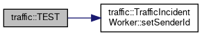

traffic Namespace Reference
Data Structures | |
| class | TrafficIncidentNode |
| class | TrafficIncidentWorker |
Functions | |
| TEST (TrafficIncidentWorkerTest, testTrafficMobilityOperationBroadcastStrategyParams) | |
| TEST (TrafficIncidentWorkerTest, testTrafficMobilityOperationBroadcastTimeStamp) | |
| TEST (TrafficIncidentWorkerTest, testTrafficMobilityOperationBroadcastStrategy) | |
| TEST (TrafficIncidentWorkerTest, testAnyTypeToStringFunction) | |
| TEST (TrafficIncidentWorkerTest, testGettersSetters) | |
Function Documentation
◆ TEST() [1/5]
| traffic::TEST | ( | TrafficIncidentWorkerTest | , |
| testAnyTypeToStringFunction | |||
| ) |
Definition at line 129 of file test_traffic.cpp.
130{
132
133 EXPECT_EQ(traffic_worker.anytypeToString(55.6712),"55.6712");
134}
◆ TEST() [2/5]
| traffic::TEST | ( | TrafficIncidentWorkerTest | , |
| testGettersSetters | |||
| ) |
Definition at line 137 of file test_traffic.cpp.
138{
141 traffic_worker.setMinGap(1.2);
142 traffic_worker.setDownTrack(1.2);
143 traffic_worker.setUpTrack(1.2);
144
145 gps_common::GPSFix msg;
146 msg.latitude=57.1;
147 msg.longitude=155.79;
148 msg.header.stamp.sec=25;
149
150
151 traffic_worker.setPinPoint(msg);
152 traffic_worker.setAdvisorySpeed(1.2);
153 traffic_worker.setEventReason("MOVE OVER LAW");
154 traffic_worker.setEventType("CLOSED");
155
156 EXPECT_EQ(traffic_worker.getSenderId(),"USDOT-49096");
157 EXPECT_EQ(traffic_worker.getMinGap(),1.2);
158 EXPECT_EQ(traffic_worker.getDownTrack(),1.2);
159 EXPECT_EQ(traffic_worker.getUpTrack(),1.2);
160 EXPECT_EQ(traffic_worker.getPinPoint().latitude,57.1);
161 EXPECT_EQ(traffic_worker.getAdvisorySpeed(),1.2);
162 EXPECT_EQ(traffic_worker.getEventReason(),"MOVE OVER LAW");
163 EXPECT_EQ(traffic_worker.getEventType(),"CLOSED");
164}
void setSenderId(std::string sender_id)
Definition: traffic_incident_worker.cpp:56
References traffic::TrafficIncidentWorker::setSenderId().
Here is the call graph for this function:

◆ TEST() [3/5]
| traffic::TEST | ( | TrafficIncidentWorkerTest | , |
| testTrafficMobilityOperationBroadcastStrategy | |||
| ) |
Definition at line 94 of file test_traffic.cpp.
95{
96
98
99 gps_common::GPSFix msg;
100
101 msg.latitude=57.1;
102 msg.longitude=155.79;
103 msg.header.stamp.sec=25;
104
105 std::string sender_id="USDOT-49096";
106 std::string closed_lane="[1]";
107 double down_track=50.1;
108 double up_track=50.1;
109 double min_gap=4.1;
110 double advisory_speed=10;
111 std::string event_reason="MOVE OVER LAW";
112 std::string event_type="CLOSED";
113
114 traffic_worker.setSenderId(sender_id);
115 traffic_worker.setMinGap(min_gap);
116 traffic_worker.setDownTrack(down_track);
117 traffic_worker.setUpTrack(up_track);
118 traffic_worker.setAdvisorySpeed(advisory_speed);
119 traffic_worker.setEventReason(event_reason);
120 traffic_worker.setEventType(event_type);
121
122 cav_msgs::MobilityOperation traffic_msg=traffic_worker.mobilityMessageGenerator(msg);
123
124 EXPECT_EQ(traffic_msg.m_header.sender_id,"USDOT-49096");
125 EXPECT_EQ(traffic_msg.strategy,"carma3/Incident_Use_Case");
126
127 }
References traffic::TrafficIncidentWorker::setSenderId().
Here is the call graph for this function:

◆ TEST() [4/5]
| traffic::TEST | ( | TrafficIncidentWorkerTest | , |
| testTrafficMobilityOperationBroadcastStrategyParams | |||
| ) |
Definition at line 24 of file test_traffic.cpp.
25{
26
28
29 gps_common::GPSFix msg;
30
31 msg.latitude=57.1;
32 msg.longitude=155.79;
33 msg.header.stamp.sec=25;
34
35 //traffic_worker.setPinPoint(msg);
36
37 std::string sender_id="USDOT-49096";
38 std::string closed_lane="[1]";
39 double down_track=50.1;
40 double up_track=50.1;
41 double min_gap=4.1;
42 double advisory_speed=10;
43 std::string event_reason="MOVE OVER LAW";
44 std::string event_type="CLOSED";
45
46 traffic_worker.setSenderId(sender_id);
47 traffic_worker.setDownTrack(down_track);
48 traffic_worker.setUpTrack(up_track);
49 traffic_worker.setMinGap(min_gap);
50 traffic_worker.setAdvisorySpeed(advisory_speed);
51 traffic_worker.setEventReason(event_reason);
52 traffic_worker.setEventType(event_type);
53
54 cav_msgs::MobilityOperation traffic_msg=traffic_worker.mobilityMessageGenerator(msg);
55
56 EXPECT_EQ(traffic_msg.strategy_params,"lat:57.1,lon:155.79,downtrack:50.1,uptrack:50.1,min_gap:4.1,advisory_speed:10,event_reason:MOVE OVER LAW,event_type:CLOSED");
57
58 }
References traffic::TrafficIncidentWorker::setSenderId().
Here is the call graph for this function:

◆ TEST() [5/5]
| traffic::TEST | ( | TrafficIncidentWorkerTest | , |
| testTrafficMobilityOperationBroadcastTimeStamp | |||
| ) |
Definition at line 60 of file test_traffic.cpp.
61{
62
64
65 gps_common::GPSFix msg;
66
67 msg.latitude=57.1;
68 msg.longitude=155.79;
69 msg.header.stamp.sec=25;
70
71 std::string sender_id="USDOT-49096";
72 std::string closed_lane="[1]";
73 double down_track=50.1;
74 double up_track=50.1;
75 double min_gap=4.1;
76 double advisory_speed=10;
77 std::string event_reason="MOVE OVER LAW";
78 std::string event_type="CLOSED";
79
80 traffic_worker.setSenderId(sender_id);
81 traffic_worker.setMinGap(min_gap);
82 traffic_worker.setDownTrack(down_track);
83 traffic_worker.setUpTrack(up_track);
84 traffic_worker.setAdvisorySpeed(advisory_speed);
85 traffic_worker.setEventReason(event_reason);
86 traffic_worker.setEventType(event_type);
87
88 cav_msgs::MobilityOperation traffic_msg=traffic_worker.mobilityMessageGenerator(msg);
89
90 EXPECT_EQ(traffic_msg.m_header.timestamp,25000);
91
92 }
References traffic::TrafficIncidentWorker::setSenderId().
Here is the call graph for this function: